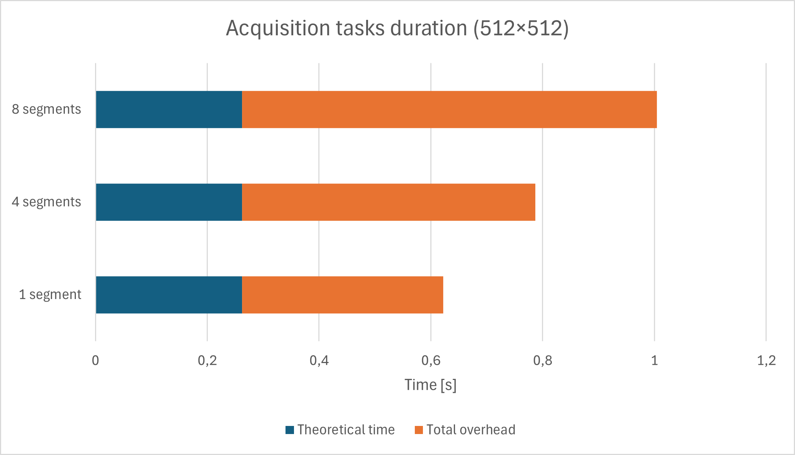
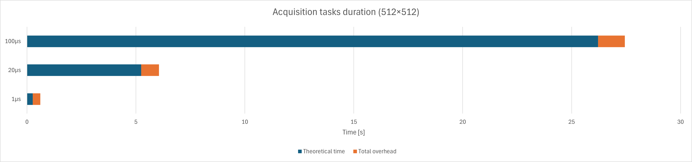
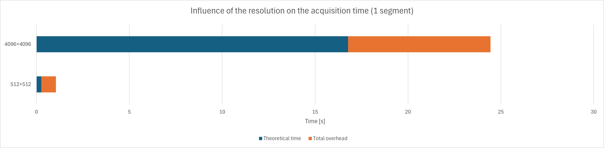

This page documents the operational time overhead of the acquisition, i.e., the theoretical time of the acquisition compared to the expected time of the acquisition. If you encounter significantly higher differences than the values presented here, please contact support.
The theoretical acquisition time of the STEM acquisition is the time needed for the microscope to visit each pixel
(typically size * size) of the image and acquire the data for the amount of time specified in the acquisition
(dwell time). It can thus be calculated as: theoretical_time = dwell time * number of pixels.
The actual time must take into account more factors: the movement of the beam between the pixels and the flyback (move to the next row of pixels), the settling time of the beam, the time needed for software processing of the data, and the time needed for serializing the data. If remote scripting is used (see installation configurations), the time needed for communication between the Support PC and the Microscope PC must also be considered.
The following measurements were made by ignoring the communication time of the acquisition, as this value is too dependent on the network configuration and the load of the network to be considered in a general case.
| Number of segments | Theoretical time [s] | Real execution time [s] | Total overhead [s] |
|---|---|---|---|
| 1 | 0.262144 | 0.62202005 | 0.35987605 |
| 4 | 0.262144 | 0.78688565 | 0.52474165 |
| 8 | 0.262144 | 1.0045273 | 0.7423833 |

| Dwell time [μs] | Theoretical time [s] | Real execution time [s] | Total overhead [s] |
|---|---|---|---|
| 1 | 0.262144 | 0.61120295 | 0.34905895 |
| 20 | 5.24288 | 6.05650225 | 0.81362225 |
| 100 | 26.2144 | 27.44323435 | 1.22883435 |

| Size [number of pixels] | Theoretical time [s] | Real execution time [s] | Total overhead [s] |
|---|---|---|---|
| 512×512 | 0.262144 | 1.042097 | 0.779953 |
| 4096×4096 | 16.777216 | 24.4433365 | 7.6661205 |
